MGIGO & Inverse Optimal Control
第一部分 求解器工作原理
问题背景 → 核心思想 → 算法流程 → 关键机制
第二部分 优化过程可视化
测试案例展示 → 收敛过程分析
第三部分 逆最优控制与代价函数设计
IOC理论 → 差速驱动机器人 → 代价函数构造
总结
从黑盒优化到信息几何搜索
挑战：
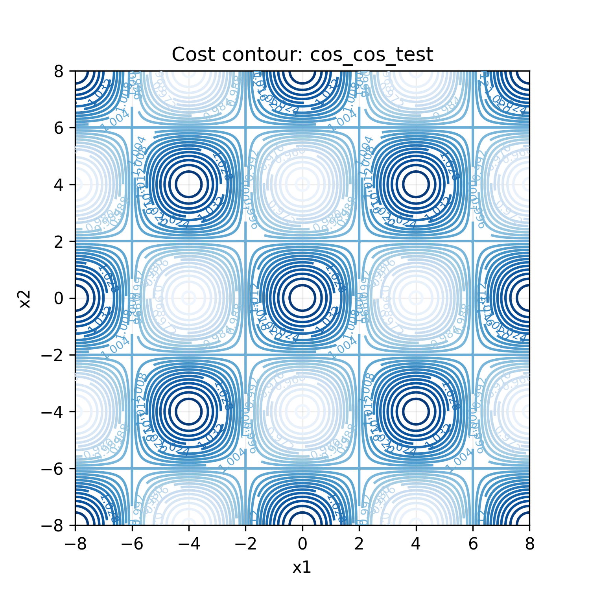
直接操作候选解 $\mathbf{x}$
梯度下降、牛顿法等
⚠ 需要梯度信息
⚠ 容易陷入局部最优
维护一个搜索分布 $q(\mathbf{x})$
让分布逐渐"浓缩"到最优解附近
✓ 无需梯度
✓ 多模态探索
✓ 不确定性量化
多模态探索
多个高斯分量可以同时追踪多个有希望的区域，不容易陷入局部最优
不确定性量化
分布的协方差自然地表达搜索的"信心"：
宽椭圆 = 还在探索
窄椭圆 = 已经锁定
每个高斯分量由三个参数定义：均值 $\boldsymbol{\mu}_k$（中心位置）、精度矩阵 $\mathbf{S}_k$（散布形状，协方差的逆）、混合权重 $\pi_k$（被选中的概率）
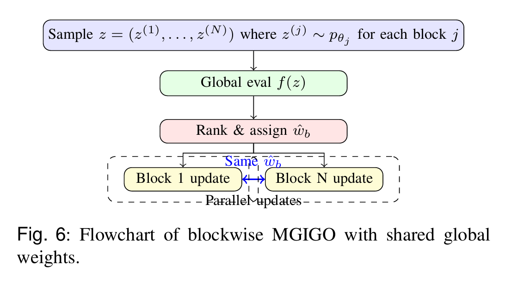
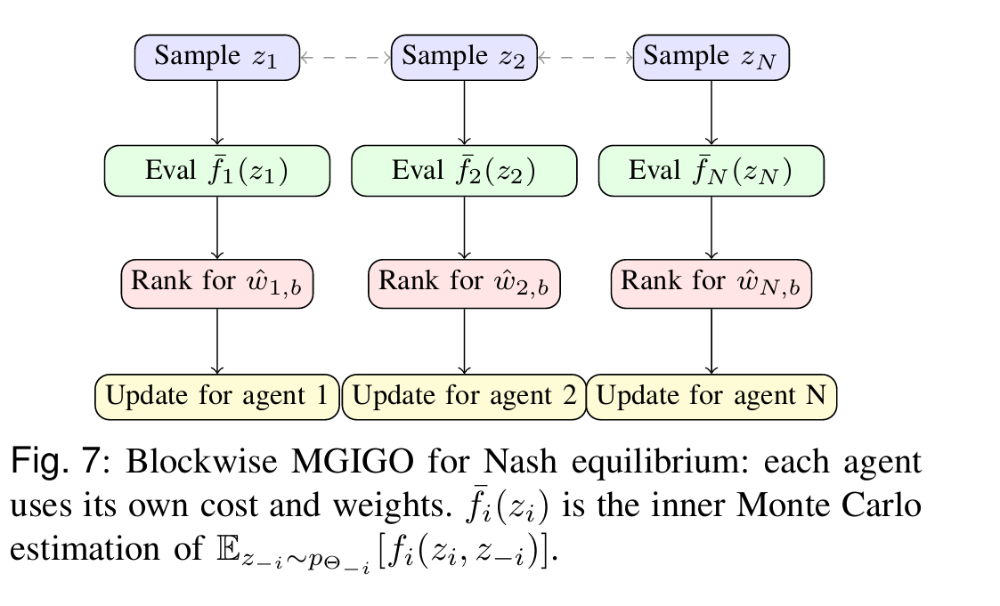
使用 Cholesky 分解高效采样：
$\mathbf{x} = \boldsymbol{\mu} + \mathbf{L}^{-\top}\mathbf{z}$，$\mathbf{z} \sim \mathcal{N}(0,\mathbf{I})$
其中 $\mathbf{S} = \mathbf{L}\mathbf{L}^\top$
有了精英样本后，沿着自然梯度方向更新分布参数，使搜索分布向精英靠拢。
更新结构类似 EM 算法：E-step 计算责任 → M-step 更新参数。整个过程通过 JAX 的 vmap 在各分量和各 block 间并行执行。
第一步：责任计算
$$a_{kb} = \frac{p(\mathbf{x}_b | \boldsymbol{\mu}_k, \mathbf{S}_k)}{\sum_j \pi_j \cdot p(\mathbf{x}_b | \boldsymbol{\mu}_j, \mathbf{S}_j)}$$ 精英样本"属于"分量 $k$ 的后验概率
第二步：精度矩阵更新
$$\mathbf{S}_k^{\text{new}} = \mathbf{S}_k - \alpha \sum_b w_b a_{kb} (\mathbf{S}_k \mathbf{d}_{kb} \mathbf{d}_{kb}^\top \mathbf{S}_k - \mathbf{S}_k)$$ 精英集中的方向 → 精度增大（协方差缩小）
第三步：均值更新
$$\boldsymbol{\mu}_k^{\text{new}} = \boldsymbol{\mu}_k + \alpha (\mathbf{S}_k^{\text{new}})^{-1} \sum_b w_b a_{kb} \mathbf{S}_k \mathbf{d}_{kb}$$ 均值被拉向精英的加权平均方向
第四步：权重更新
$$\pi \leftarrow \text{softmax}\left(\log\frac{\pi_{1:K-1}}{\pi_K} + \alpha \sum_b w_b(a_{1:K-1,b} - a_{K,b})\right)$$ 解释力强的分量获得更多权重
其中 $\mathbf{d}_{kb} = \mathbf{x}_b - \boldsymbol{\mu}_k$，$w_b = 1/B$，$\alpha$ 为学习率
每 $T_0$ 次迭代，将精度矩阵重置为单位矩阵，混合权重重置为均匀分布（但保留均值）。
这是探索-利用平衡的关键策略。
无重置
搜索范围过早收缩，停滞在局部最优
有重置
定期重新扩展搜索，找到全局最优
当优化变量可自然分成多个语义独立的子块时，每个子块维护独立的混合高斯分布，评估时组合。
↓
组合为完整向量 $\mathbf{x} = [\mathbf{x}_1 | \mathbf{x}_2 | \cdots | \mathbf{x}_N]$
↓
统一评估 $f(\mathbf{x})$
↓
各 block 独立更新
优势：
vmap 实现各 block 并行更新| 参数 | 符号 | 默认值 | 作用 |
|---|---|---|---|
| 分量数 | $K$ | 5 | 高斯混合的分量个数，越大探索能力越强 |
| 样本数 | $B$ | 300 | 每轮采样的候选解数量 |
| 精英数 | $B_0$ | 100 | 每轮保留的精英样本数 |
| 学习率 | $\alpha$ | 0.15 | 自然梯度步长，太大不稳定，太小收敛慢 |
| 重置周期 | $T_0$ | 200 | 多少代后重置精度矩阵 |
| 总迭代 | $T$ | 600 | 总的迭代轮数 |
jit 编译和 GPU 加速；使用 lax.scan 将整个迭代编译为单个 XLA 计算图；Cholesky 参数化保证精度矩阵始终正定。
IGO 算法家族
MGIGO 的独特之处
这三个要素的组合使 MGIGO 特别适合多模态、中等维度的黑盒优化问题
从搜索分布到最优解的迭代过程
以下展示 MGIGO 在不同类型目标函数上的表现。每张图展示目标函数的指数变换 $e^{-f(\mathbf{x}) \cdot 0.05}$（越亮 = $f$ 越小 = 越优）。
$$f(x_1, x_2) = -\cos\left(\frac{\pi x_1}{4}\right) \cdot \cos\left(\frac{\pi x_2}{4}\right)$$
$$f(x_1, x_2) = \frac{2(x_1+x_2-2)^2 + (x_1-x_2)^2}{10}$$
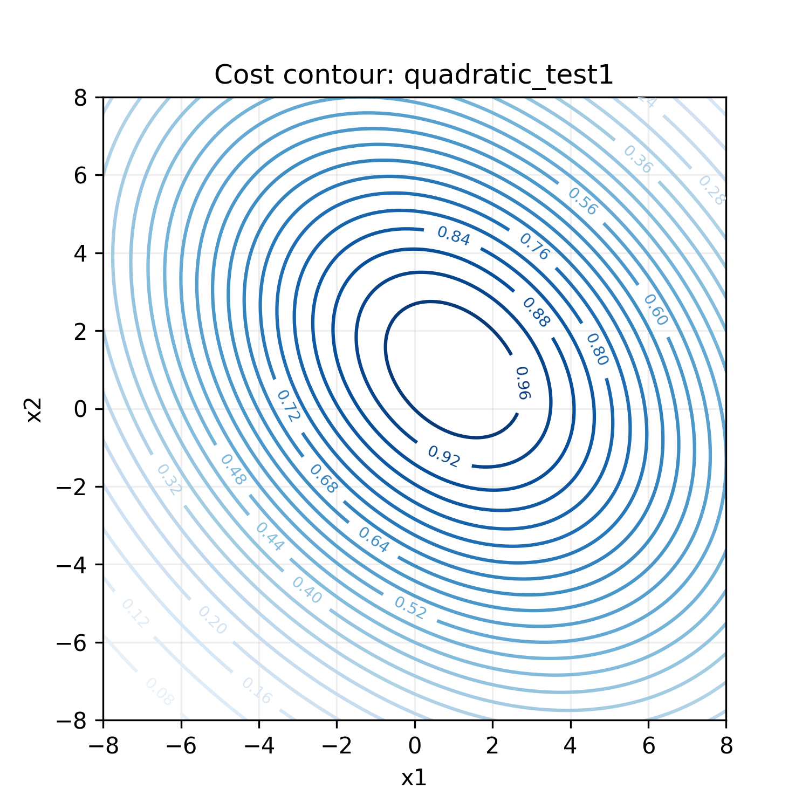
$$f(x_1, x_2) = \frac{20(x_1+x_2-2)^2 + (x_1-x_2)^2}{10}$$
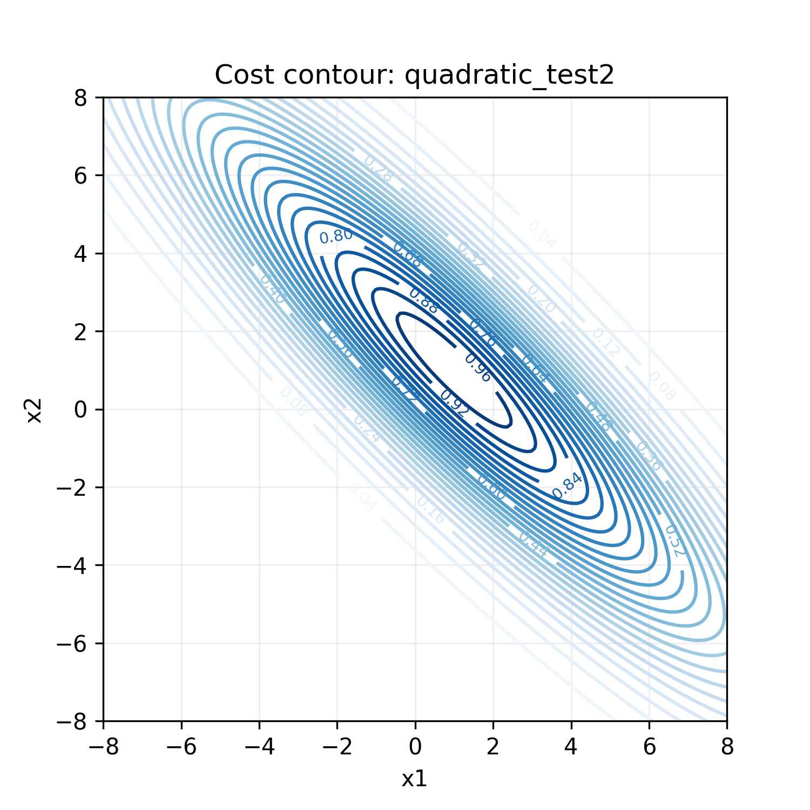
以下展示 MGIGO 在$f(x_1, x_2) = \frac{2(x_1+x_2-2)^2 + (x_1-x_2)^2}{10}$函数上的表现，罚函数用线性斜坡+阶梯构成。
$$ \{ (x_1, x_2) \in \mathbb{R}^2 \mid x_1 - x_2 \geq 2 \} $$
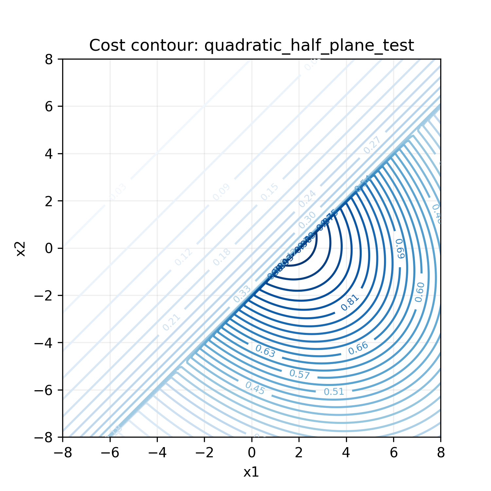
$$ \{ (x_1, x_2) \in \mathbb{R}^2 \mid |x_1 - x_2 - 2| \leq 0.3 \} $$
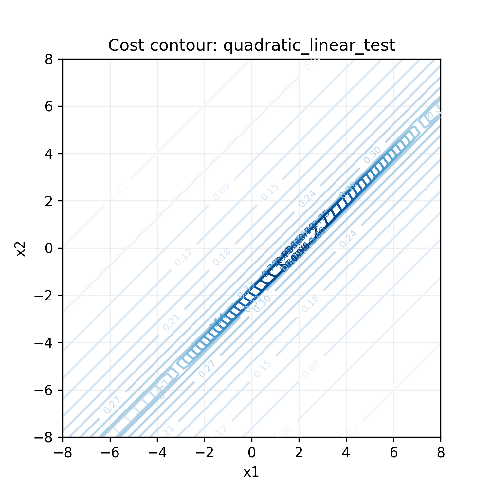
$$ \{ (x_1, x_2) \in \mathbb{R}^2 \mid | x_1^2 + (x_2+1)^2 - 16 | \leq 3 \} $$
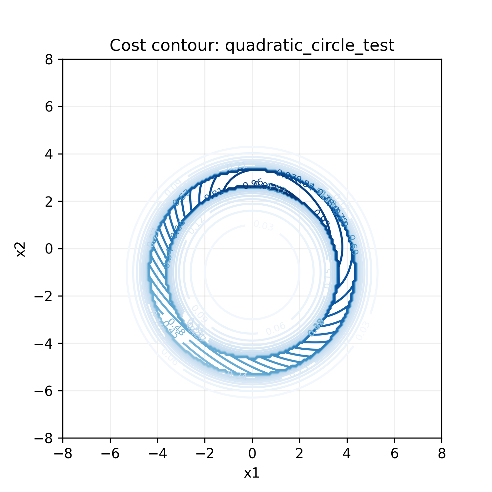
$$f(x_1, x_2) = -\cos\left(\frac{\pi x_1}{4}\right) \cdot \cos\left(\frac{\pi x_2}{4}\right)$$
$$f(x_1, x_2) = -\cos\left(\frac{\pi x_1}{4}\right) \cdot \cos\left(\frac{\pi x_2}{4}\right)$$
$$f = \frac{2(x_1+x_2-2)^2 + (x_1-x_2)^2}{10}$$
$$f = \frac{20(x_1+x_2-2)^2 + (x_1-x_2)^2}{10}$$
$$ \{ (x_1, x_2) \in \mathbb{R}^2 \mid x_1 - x_2 \geq 2 \} $$
一侧线性斜坡+阶梯，另一侧二次型
考验跨越不连续边界的能力
📹 优化过程视频
$$ \{ (x_1, x_2) \in \mathbb{R}^2 \mid |x_1 - x_2 - 2| \leq 0.3 \} $$
窄带内平滑二次型，两侧线性斜坡+阶梯，
考验线性约束搜索能力
📹 优化过程视频
$$ \{ (x_1, x_2) \in \mathbb{R}^2 \mid | x_1^2 + (x_2+1)^2 - 16 | \leq 3 \} $$
可行域为圆环，圆环外是线性斜坡+阶梯，
考验非线性约束处理
📹 优化过程视频
$$ \{ (x_1, x_2) \in \mathbb{R}^2 \mid x_1 - x_2 \geq 2 \} $$
一侧线性斜坡+阶梯，另一侧二次型
考验跨越不连续边界的能力
$$ \{ (x_1, x_2) \in \mathbb{R}^2 \mid |x_1 - x_2 - 2| \leq 0.3 \} $$
窄带内平滑二次型，两侧线性斜坡+阶梯，
考验线性约束搜索能力
$$ \{ (x_1, x_2) \in \mathbb{R}^2 \mid | x_1^2 + (x_2+1)^2 - 16 | \leq 3 \} $$
可行域为圆环，圆环外是线性斜坡+阶梯，
考验非线性约束处理
| 元素 | 含义 |
|---|---|
| ⬤ 蓝色等高线 | $e^{-f \cdot 0.05}$ 变换（亮 = 好） |
| ⬤ 灰色散点 | 当前轮采样的候选解 |
| ◆ 橙色菱形 | 各高斯分量的均值 $\boldsymbol{\mu}_k$ |
| ⭐ 金色五角星 | 当前最佳分量的均值 |
| ⬤ 橙色椭圆 | 各分量 $3\sigma$ 等概率椭圆 |
| ⬤ 黑色虚线椭圆 | 最佳分量 $3\sigma$ 椭圆 |
收敛过程的三个特征：
以下展示 MGIGO 在不同迭代阶段的搜索分布状态：
重置周期 $T_0$ 是探索-利用平衡的关键参数：太小 → 收敛慢；太大 → 容易陷入局部最优
通过 IOC 方法设计 IGO 求解器的 cost 函数
Inverse Optimal Control
代价函数 $J$ → 求解 HJB 方程 → 最优控制律 $\mathbf{u}^*$
HJB 是偏微分方程，对一般非线性系统极难求解
镇定控制器 $\mathbf{u} = \mathbf{k}(\mathbf{x})$ → 构造 CLF → 代价函数 $J$
避免求解 HJB，只需构造 CLF 并验证 $\dot{V} < 0$
定义
对于控制仿射系统
$$ \dot{\mathbf{x}} = \mathbf{f}(\mathbf{x}) + \mathbf{g}(\mathbf{x})\mathbf{u} $$
若存在光滑、正定、径向无界函数 $V(\mathbf{x})$， 且满足
$$ \inf_{\mathbf{u}} \left\{ \nabla V^\top \big( \mathbf{f}(\mathbf{x}) + \mathbf{g}(\mathbf{x})\mathbf{u} \big) \right\} <0, \quad \forall \mathbf{x}\neq0 $$
从 CLF 到控制器
给定 CLF，可求解最小控制能量问题：
$$ \min_{\mathbf{u}} \|\mathbf{u}\|^2 \quad \text{s.t.} \quad \dot V \le -\sigma(\mathbf{x}) $$
得到点状最小范数（PMN）控制器：
$$ \mathbf{u}_{\text{PMN}} = \begin{cases} -\dfrac{L_fV+\sigma} {\|L_gV\|^2} (L_gV)^\top, & L_gV\neq0\\ \mathbf{0}, & L_gV=0 \end{cases} $$
意义：只要找到了一个 CLF 和一个使它递减的控制器，就自动得到了一个使该控制器最优的代价函数——不需要求解 HJB 方程。
$$\dot{x} = v \cos \theta$$ $$\dot{y} = v \sin \theta$$ $$\dot{\theta} = \omega$$
$$\dot{\rho} = -v \cos \gamma$$ $$\dot{\delta} = \frac{v}{\rho} \sin \gamma$$ $$\dot{\gamma} = \frac{v}{\rho} \sin \gamma - \omega$$
其中 $\rho$ 为到原点距离，$\delta$ 为方位角，$\gamma = \delta - \theta$ 为朝向偏差
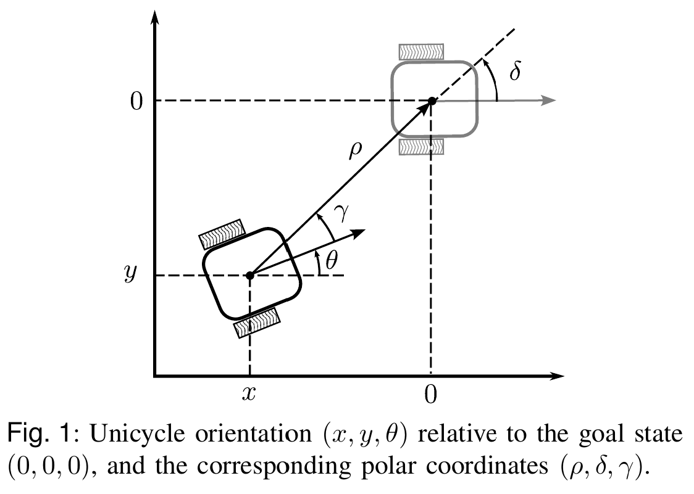
将系统写为标准仿射形式 $\dot{\mathbf{x}} = \mathbf{f}(\mathbf{x}) + \mathbf{g}(\mathbf{x})\mathbf{u}$：
目标：镇定系统到原点 $(\rho=0, \delta=0, \gamma=0)$。设计如下控制律：
线速度
$$v = k_1 \rho \cos \gamma$$
$v \propto \rho$：越远越快
$\cos\gamma$：朝向不对时减速
角速度
$$\omega = \frac{k_1}{2} \sin(2\gamma) + \tilde{\omega}$$
$\tilde{\omega}$ 有 4 种变体
对应不同的 $\delta$-$\gamma$ 耦合策略
四种 $\tilde{\omega}$ 变体：
| 变体 | 表达式 | 耦合特征 |
|---|---|---|
| $\tilde{\omega}_1$ | $k_2\sin\gamma + k_3\frac{\sin 2\gamma}{2\gamma}\delta$ | sinc 型，标准耦合 |
| $\tilde{\omega}_2$ | $k_2\sin\gamma + \frac{k_3\cos\gamma}{(1+\tan^2(\gamma/2))^2}\delta$ | $\gamma$ 快速衰减型 |
| $\tilde{\omega}_3$ | $k_2\sin\gamma + 2k_3\frac{\sin 2\gamma}{2\gamma}(1+\tan^2\frac{\delta}{2})\tan\frac{\delta}{2}$ | $\delta$ 增强型 |
| $\tilde{\omega}_4$ | $k_2\sin\gamma + 2k_3\frac{\cos\gamma}{(1+\tan^2(\gamma/2))^2}(1+\tan^2\frac{\delta}{2})\tan\frac{\delta}{2}$ | 综合调节型 |
四种控制律变体分别对应四种 CLF 设计：
| CLF | 状态空间 | 表达式 $V(\rho, \delta, \gamma)$ | $\delta$-$\gamma$ 耦合机制 |
|---|---|---|---|
| $V_0$ | $\mathcal{S}$ | $\rho^2 + \frac{1}{2}(\delta^2 + \gamma^2 + 2)^2 - 2 + (\delta + \gamma)^2$ | $(\delta+\gamma)^2$ → 线性耦合 |
| $V_1$ | $\mathcal{S}_1$ | $\rho^2 + (\delta + \sin\gamma)^2 + 4\tan^2\frac{\gamma}{2}$ | $(\delta+\sin\gamma)^2$ → $\gamma$ 快速衰减 |
| $V_2$ | $\mathcal{S}_2$ | $\rho^2 + \delta^2 + \left(\gamma + \frac{1}{2}\arctan(4\tan\frac{\delta}{2})\right)^2$ | $\arctan$ → $\delta$ 增强 |
| $V_3$ | $\mathcal{S}_3$ | $\rho^2 + A^3 - 1 + B^2$ $A=4\tan^2\frac{\delta}{2}+4\tan^2\frac{\gamma}{2}+1, B=2\tan\frac{\delta}{2}+2\tan\frac{\gamma}{2}$ |
$B^2+A^3$ → 综合调节 |
所有 $V_i$ 均满足 CLF 的三个条件：正定（$V>0, \forall \mathbf{x}\neq\mathbf{0}$）、径向无界（$\|\mathbf{x}\|\to\infty \Rightarrow V\to\infty$）、可镇定（$\inf_{\mathbf{u}} \dot{V} < 0$）。
选取控制 Lyapunov 函数 $V_i(\mathbf{x})$ 作为最优值函数， 并令参考控制律 $\mathbf{u}_{\mathrm{ref}} = [v_{\mathrm{ref}},\omega_{\mathrm{ref}}]^T$。 根据逆最优控制思想，构造运行代价：
其中 $\mathbf{R}=\operatorname{diag}(r_1,r_2)\succ0$， 且
因此总代价函数写为：
| 代价项 | 物理含义 |
|---|---|
| $-\dot V_i$ | 鼓励 Lyapunov 函数单调下降，保证系统收敛 |
| $(v-v_{\mathrm{ref}})^2$ | 惩罚线速度偏离稳定控制律 |
| $(\omega-\omega_{\mathrm{ref}})^2$ | 惩罚角速度偏离稳定控制律 |
| $r_1,r_2$ | 调节控制输入偏差的权重 |
| 变体 | $\delta$-$\gamma$ 耦合特征 | 代价函数特点 | 适用的状态空间 |
|---|---|---|---|
| $\tilde{\omega}_1$ | $\frac{\sin 2\gamma}{2\gamma}\delta$（sinc 型） | 标准耦合惩罚，$\gamma$ 大时耦合减弱 | $\mathcal{S}_1 := \{ \rho >0 \} \times \{ \delta \in \mathbb{R}, \gamma \in \mathbb{R} \}$ |
| $\tilde{\omega}_2$ | 含 $\cos\gamma/(1+\tan^2(\gamma/2))^2$ | $\gamma$ 较大时更快衰减耦合 | $\mathcal{S}_2 := \{ \rho >0 \} \times \{ \delta \in \mathbb{R}, | \gamma | < \pi \}$ |
| $\tilde{\omega}_3$ | 含 $(1+\tan^2(\delta/2))\tan(\delta/2)$ | $\delta$ 较大时增强耦合，加速大偏差校正 | $\mathcal{S}_3 := \{ \rho >0 \} \times \{ | \delta | < \pi, \gamma \in \mathbb{R} \}$ |
| $\tilde{\omega}_4$ | $\tilde{\omega}_2$ + $\tilde{\omega}_3$ 的综合 | 综合调节 | $\mathcal{S}_4 := \{ \rho >0 \} \times \{ | \delta | < \pi, | \gamma | < \pi \}$ |
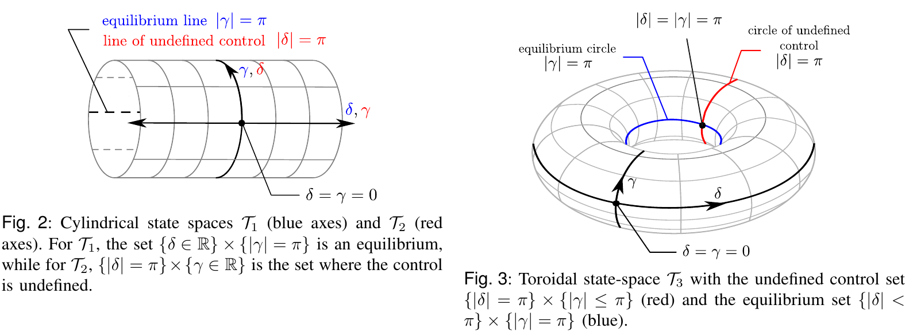
左图是状态空间划分图（$\delta$-$\gamma \in \mathbb{R} $ or $\in (-\pi, \pi)$ ）显示了每个 CLF 的收敛域和对应的稳定区域边界。
运行方式：
交互功能：
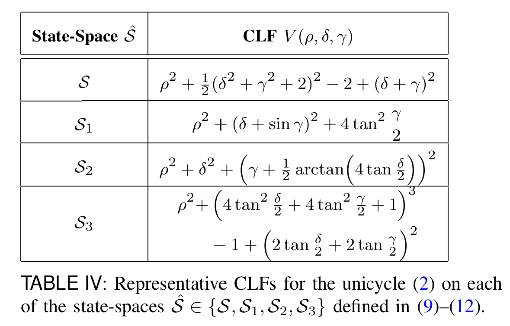
现场运行演示程序，展示四种控制律变体在不同参数下的轨迹行为
在更复杂的多智能体场景中，IOC 设计的代价函数同样适用。以下是一个4台差速驱动 AGV 协同避障的仿真演示：
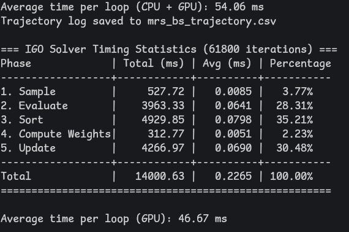
IGO + IOC = 理论保证 + 数值优化
MGIGO 提供强大的黑盒优化能力；IOC 提供有理论基础的代价函数设计方法
两者结合，为复杂控制问题的参数优化提供了完整的解决方案
Questions & Discussion
MGIGO: Mixture of Gaussian Information-Geometric Optimization
IOC: Inverse Optimal Control